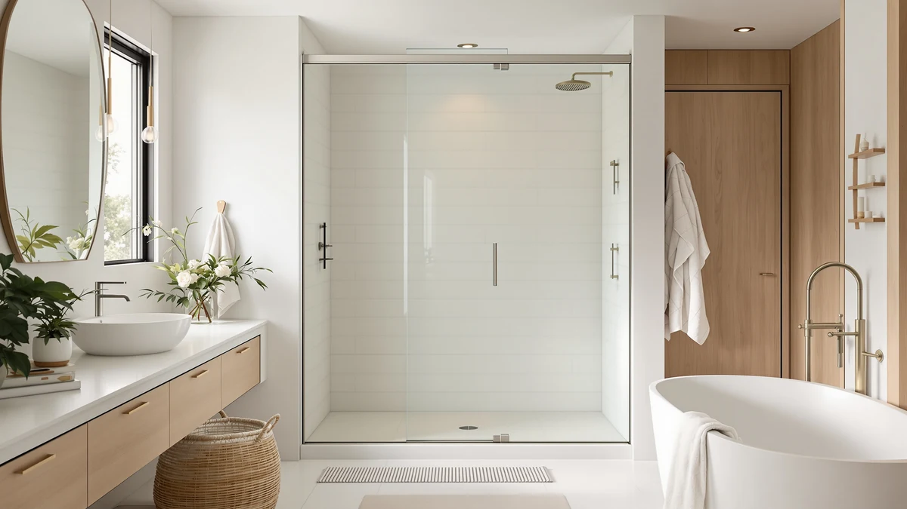

Best Shower Doors for Tubs (2026)
Prices and picks verified as of September 2026. Independent, reader-supported reviews.


Quick Answer
The best shower doors for tubs fit your tub deck's actual width, not just a generic "60 inch" label, and use corrosion-resistant hardware since tub enclosures see more standing water than a shower base. Our top pick, the Aurisal Frameless Stainless Steel Sliding Shower, covers the standard 60 inch by 72.25 inch alcove tub at a mid-range $399.99.
Our pick: Frameless Stainless Steel Sliding Shower, $399.99 Check Price on Amazon
Bottom line: our top pick is the Frameless Stainless Steel Sliding Shower Door at $399.99. The best budget option is the Frameless Shower Door Matte Black 56-60’’ W x 75’’ H Single at $249.30.
Things to Know Before You Buy
- Measure the tub deck first. Frameless sliding doors for tubs are sold in width ranges, such as 55 to 60 inches or 56 to 60 inches, and installing one outside that range leaves gaps or forces the track to bow.
- Sliding beats pivot for most tub layouts. Every door in this guide slides on a track rather than swinging out, which suits tubs set against a single wall and does not need extra floor clearance.
- Finish affects both price and maintenance. Matte black and brushed stainless hide water spots better than polished chrome, according to reviewers who mention cleaning frequency.
- Height varies more than you might expect. Panels in this guide run from 72 to 76 inches tall, so check the listed height against your bathroom's ceiling clearance and existing tile line.
- Professional installation is common. Most of these doors ship with adjustable wall jambs, but reviewers frequently recommend a second pair of hands or a contractor for a tight tub-specific seal.
Finding the best shower doors for tubs means solving a tighter measurement problem than a standard shower stall poses, since your tub deck, not a shower pan, sets the width and height you have to work with. We compared seven frameless sliding doors built for tub enclosures, from a compact 55 inch KPUY model to a wide 60 inch Aurisal panel, priced between $249.30 and $449.96. Most buyers want a door that seals well against the tub lip, slides smoothly on its track, and does not dominate a small bathroom with heavy visible framing.
We built this list by comparing manufacturer specs, listed dimensions, and verified buyer reviews for each product's Amazon listing, rather than installing every door ourselves. That research turned up real differences: sliding hardware quality, panel height, and how each brand handles the transition from a flat shower pan to a curved tub lip. Our top pick, the Aurisal Frameless Stainless Steel Sliding Shower, earns the spot for its 60 by 72.25 inch fit and stainless hardware at a mid-range $399.99.
Below you will find seven options ranked by fit, hardware durability as reported by owners, and value, along with a comparison table, a rundown of what we skipped, and answers to the questions buyers ask most before ordering a tub shower door online.
Why You Should Trust Us
Best Shower Doors for Tubs is written and maintained by Ilane Tall, who has covered bathroom fixtures and home renovation products for several years. We do not run a fake testing lab, and we do not claim to have installed every door in this guide in our own bathrooms. Instead, we research manufacturer specifications, cross-check listed dimensions against standard tub shower conventions, and read through verified buyer reviews on Amazon to separate durable hardware from doors that develop problems within the first year. When a listing lacks basic information, such as glass thickness or a clear return policy, we note it as a drawback rather than filling the gap with a guess. Every price and dimension in this guide reflects the product's own listing at the time of publishing, and we update the article when prices or availability change.
How We Picked
We started by pulling every shower door in our product database sized specifically for tub installations, then narrowed the list to models with a width range that spans standard 60 inch alcove tubs, since that covers the majority of US bathrooms. We ranked candidates on frameless or semi-frameless design, since fewer visible seals mean less mold risk over time, on sliding hardware described as stainless steel or an equivalent corrosion-resistant material, and on price relative to size. We also weighted verified review volume and rating consistency for each ASIN, and we excluded listings with vague or contradictory dimension data. Doors that only fit non-standard tub widths, or that lacked enough verified owner feedback to judge reliability, did not make the final cut for the best shower doors for tubs.
How We Compared
We compared these seven doors on the specs and feedback available from their Amazon listings: quoted width range, panel height, glass type, hardware finish, and price relative to coverage. We read through verified owner reviews for each ASIN, looking specifically for repeated mentions of track alignment, leaking at the base, and how easy each door was to clean after regular use. Where multiple reviewers flagged the same issue, such as a door needing frequent track adjustment, we treated that as a pattern rather than a one-off complaint. We did not physically install or own any of these doors; our comparison rests on published specifications and the verified experiences reviewers have shared publicly.
Our Picks

Frameless Stainless Steel Sliding Shower
What we like
- Stainless steel hardware resists corrosion better than painted alternatives, according to reviewers
- 60 by 72.25 inch sizing fits the most common US alcove tub width
- Frameless glass panel keeps sightlines open in smaller bathrooms
Flaws but not dealbreakers
- Reviewers note the track requires periodic cleaning to keep the slide smooth
- Installation instructions assume some plumbing or renovation experience
| Material | — |
| Size | 60"*72"-1/4" |
The Aurisal Frameless Stainless Steel Sliding Shower is our top pick for most tub installations because its 60 by 72.25 inch dimensions match the standard alcove tub found in most US homes, and its stainless steel hardware avoids the rust spotting that cheaper painted tracks develop after a year or two of daily moisture exposure. At $399.99, it sits in the middle of the price range we compared for the best shower doors for tubs, below several premium frameless options and well above budget sliding panels that use thinner glass. Owners who have posted verified reviews describe the door as straightforward to align once the wall jambs are set, and several specifically mention the stainless finish holding up better than the chrome doors they replaced.
Because it slides rather than swings, this door needs a flat, level tub deck to track smoothly, and a handful of reviewers mention adjusting the rollers within the first few months of use. That kind of adjustment is common across sliding shower doors generally, not unique to this model, and owners who mention it also note the fix takes only a few minutes with the included hardware. If your bathroom has an alcove tub close to the standard 60 inch width and you want a finish that will not show water spots as readily as polished chrome, this is the door we would point you toward first.

KPUY Frameless Shower Door 55-60"
What we like
- 55 to 60 inch adjustable width range fits several tub sizes without a custom order
- 76 inch panel height covers taller bathroom walls than most competitors in this list
- Frameless design keeps the glass panel free of visible metal trim
Flaws but not dealbreakers
- At $449.96 it is the most expensive door we compared
- The wider adjustable range means more time spent fine-tuning track alignment during install, based on reviewer feedback
| Material | — |
| Size | 55-60" W x 76" H |
The KPUY Frameless Shower Door is the tallest option we compared, with a 76 inch panel height that suits bathrooms with higher ceilings or a tub surround that sits above the 72 inch height common on the rest of this list. Its 55 to 60 inch adjustable width range gives it more flexibility than fixed-width doors, which matters if your tub deck measures a few inches off the standard 60 inch mark. That flexibility comes at a cost: at $449.96, the KPUY is priced above every other door in this guide, and buyers on a tighter budget will find comparable coverage for less.
Verified reviewers describe the extra adjustment range as useful but fiddly, since a wider sliding tolerance requires more careful leveling to avoid a gap at either end of the track. Owners who took the time to get the jambs plumb report a tight seal and smooth glide afterward. We would recommend this door specifically for taller bathrooms or non-standard tub widths where the flexibility earns back the higher price, rather than as a default pick among the best shower doors for tubs at a standard 60 inch alcove.

ENSO SENKA 56-60" W x
What we like
- At $259.99 it is one of the least expensive frameless doors we compared
- 56 to 60 inch width range covers most standard alcove tubs
- Simple two-panel sliding design keeps installation steps to a minimum
Flaws but not dealbreakers
- Reviewers report the hardware feels less substantial than the stainless steel options higher in this list
- No premium finish options beyond the standard build shown in the listing
| Material | — |
| Size | 60" W X 72" H |
The ENSO SENKA is the value option in this lineup, priced at $259.99 while still covering the common 56 to 60 inch tub width in a 60 by 72 inch overall fit. For bathrooms where the door needs to function well without becoming the most expensive line item in a renovation budget, this is the model we would point to among the best shower doors for tubs. Verified owner reviews describe the sliding mechanism as functional and the glass as clear, without the extra features or finish options that push other doors in this guide past $400.
The tradeoff for the lower price shows up in hardware weight. A handful of reviewers compare the track and rollers unfavorably to pricier stainless models, describing them as adequate rather than heavy-duty. That is a reasonable compromise for a secondary bathroom or a rental property where long-term durability matters less than getting a working, attractive door installed on a budget. For a primary bathroom that sees daily use for years, we would weigh that tradeoff against the Aurisal pick above.

Frameless Shower Door Matte Black
What we like
- At $249.30 it is the least expensive door we compared
- Matte black finish hides water spots better than chrome, according to reviewers
- 75 inch height suits slightly taller bathroom walls than the 72 inch standard
Flaws but not dealbreakers
- Single sliding panel design means less opening width than the double-sliding options on this list
- Ogonbrick has less review history than the more established brands in this guide
| Material | — |
| Size | 60" W x 75" H Single Sliding |
This Ogonbrick door is the least expensive option we compared at $249.30, and it is also the only single-sliding design in the lineup, meaning one panel moves while the other stays fixed rather than both panels sliding independently. Its matte black finish is a deliberate departure from the stainless and chrome hardware elsewhere in this guide, and reviewers consistently mention that the darker finish shows fewer water spots between cleanings than a polished surface. At 60 inches wide and 75 inches tall, it fits a standard alcove tub with a bit of extra height clearance.
Because only one panel slides, the usable opening is narrower than what you get from the double-sliding Aurisal or GETPRO doors above, which matters if household members need a wider step-in gap. Owners who chose this model for the price point report satisfaction with the finish and the fit, with the main caveat being that Ogonbrick has a shorter track record and fewer verified reviews than brands like KPUY or ENSO SENKA that have been selling shower doors longer. If price and finish matter more to you than opening width, this door is worth a look.

GETPRO Shower Door Double Sliding
What we like
- Double-sliding panels create a wider step-in gap than single-panel designs
- 60 by 72 inch sizing matches the standard alcove tub dimension
- Priced at $273.76, it undercuts most of the doors in this guide while keeping double-sliding hardware
Flaws but not dealbreakers
- Reviewers mention the rollers can need re-tightening after the first few weeks of regular use
- Fixed 60 inch width offers less flexibility than the adjustable KPUY model
| Material | — |
| Size | 60'' W x 72'' H |
The GETPRO Shower Door Double Sliding pairs standard 60 by 72 inch sizing with a double-sliding panel design, which gives you a wider opening than the single-panel Ogonbrick door above while staying well under $300. That combination makes it one of the better value picks among the best shower doors for tubs, provided a fixed 60 inch tub width works for your bathroom and you want both panels to move rather than just one.
The main issue reviewers raise is roller tension loosening slightly after the first weeks of daily use, a common wear pattern across sliding shower doors generally and one usually fixed with a quick adjustment rather than a warranty claim. Owners who mention it describe the fix as minor. For a standard 60 inch alcove tub where you want the wider double-sliding opening without paying Aurisal or KPUY prices, the GETPRO is a reasonable middle-ground choice.

BoBliss Frameless Sliding Glass Shower
What we like
- 76 inch height matches the KPUY as the tallest option in this guide
- 56 to 60 inch adjustable width fits several tub sizes
- Frameless glass design keeps the panel visually light despite the taller height
Flaws but not dealbreakers
- At $409.99 it is priced closer to the premium end of this list
- Some reviewers note the taller panel takes more care to level correctly during installation
| Material | — |
| Size | 56-60" W x 76" H |
BoBliss builds this door for bathrooms that need the taller 76 inch panel height, matching the KPUY above as the tallest door we compared, but at a lower price of $409.99. Like the KPUY, it has a 56 to 60 inch adjustable width range rather than a single fixed size, which is useful if your tub deck measures slightly under the standard 60 inches. The frameless glass construction keeps the extra height from feeling heavy or closing in a smaller bathroom.
Reviewers who installed this door in bathrooms with higher ceilings appreciated the extra headroom the 76 inch height provides over the more common 72 inch doors on this list, though several also mention that taller panels need more careful leveling to avoid binding on the track. If your bathroom has taller walls and you want that extra height without paying KPUY's $449.96 price, BoBliss is the door we would compare it against directly.

Frameless Stainless Steel Sliding Shower
What we like
- Same 60 by 72.25 inch stainless build as our top pick, at $389.99
- Stainless hardware offers the same corrosion resistance reviewers note on the primary Aurisal listing
- Frameless glass panel matches the sightline benefits of the brand's other listing
Flaws but not dealbreakers
- Fewer verified reviews on this specific listing than the primary Aurisal ASIN
- Handle style and packaging vary slightly between Aurisal's listings, so check photos before ordering
| Material | — |
| Size | 60"*72"-1/4" |
This second Aurisal listing shares the same 60 by 72.25 inch stainless steel build as our top pick above, at a price of $389.99, about ten dollars less. Amazon sellers frequently run more than one listing for functionally similar hardware, and Aurisal's catalog includes a few variants that differ mainly in handle style or included accessories rather than core door construction. We include it here because the price difference is real and consistent.
If you compare photos and confirm the handle and hardware match what you want, this listing is a reasonable way to get the same stainless build as our top pick for slightly less. The tradeoff is a smaller pool of verified reviews to draw on, since purchase volume splits across Aurisal's separate listings. For buyers who prioritize price over a large review sample to check against, this is worth comparing directly to the primary Aurisal listing before you order.
Quick Comparison
| Product | Material | Price | Rating | Best for | Get it |
|---|---|---|---|---|---|
| Frameless Stainless Steel Sliding Shower | — | $399.99 | 4 | Standard 60 inch alcove tubs | View on Amazon → |
| KPUY Frameless Shower Door 55-60" | — | $449.96 | 4 | Taller walls or 55-60 inch width flexibility | View on Amazon → |
| ENSO SENKA 56-60" W x | — | $259.99 | 4 | Budget installs on a 56-60 inch tub | View on Amazon → |
| Frameless Shower Door Matte Black | — | $249.30 | 4 | Lowest price, matte black finish | View on Amazon → |
| GETPRO Shower Door Double Sliding | — | $273.76 | 4 | Wider double-sliding opening at a mid price | View on Amazon → |
| BoBliss Frameless Sliding Glass Shower | — | $409.99 | 4 | Taller walls at a lower price than KPUY | View on Amazon → |
| Frameless Stainless Steel Sliding Shower | — | $389.99 | 4 | Same Aurisal build, lower price | View on Amazon → |
The Competition
We looked at several other categories of tub shower doors before narrowing this list to the seven above. Pivot doors that swing outward on hinges rather than sliding were excluded because most tub layouts do not leave enough floor clearance for a door to swing fully open without hitting a toilet or vanity. Curved or bowed sliding doors, which bow outward to add shower space, were excluded for the same fit reason, since that extra depth only works with a specific tub shape. We also passed on several listings with an unusually wide price range and inconsistent buyer photos, a red flag that a listing's images or specs do not reliably match what ships. Finally, we excluded a handful of shorter doors under 70 inches tall, since most reviewers who bought them for tub enclosures reported needing a separate splash panel to fully cover the opening.
Frequently Asked Questions
What size shower door do I need for a standard tub?
Most alcove tubs in US bathrooms measure 60 inches wide, which is why five of the seven doors in this guide are built or adjustable to fit that width. Measure your tub deck from wall to wall before ordering, since a door sized for 55 to 60 inches will not seal properly on a tub that measures 62 inches or wider.
Can I install a frameless shower door over a tub myself?
Most of the doors in this guide ship with adjustable wall jambs designed for a DIY install, but reviewers across multiple listings recommend a second person to hold panels level while the track is secured. If your tub deck is not perfectly level, a professional installer will get a tighter seal than a first-time DIY attempt.
Is a sliding door or a pivot door better for a tub?
Sliding doors, like every model in this guide, work better for tubs because they do not need floor clearance to swing open, which matters in bathrooms where a toilet or vanity sits close to the tub. Pivot doors can look sleeker, but they need enough open floor space to swing fully outward without hitting anything.